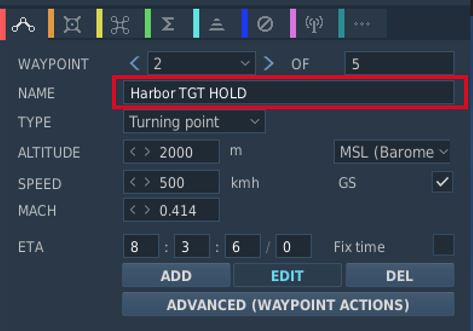
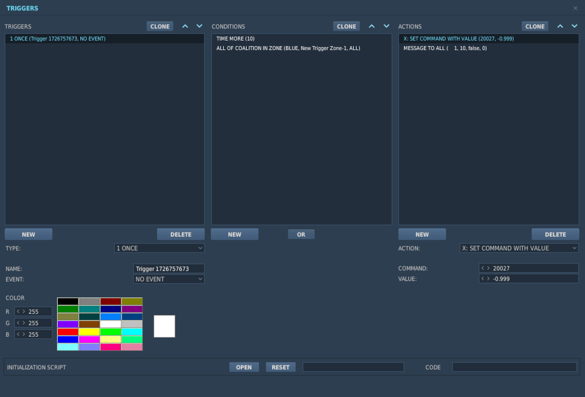

Mission Editor
The F-4 has several special options selectable in the Mission Editor.

Condition and Wear
"And I'll tell you what, since Cal's on it, it's only flown on approved cross-countries and drill weekends. Mint condition, folks, no over-Gs."
All components of the aircraft simulate wear individually, yielding a unique experience on each spawn, but also based on how the F-4 is flown.
It is generally differentiated between Condition and the Wear and Tear, both are dynamic at spawn and can be influenced throughout a mission by various factors such as forces, temperature and also combat damage.
The aircraft has thousands of components that are subject to this system. One concrete example would be the speed of the Pave Spike Targeting Pod elevation gimbal motor. Under perfect condition, it is supposed to have a speed of 60 degrees per second. However, a factory generally can not ensure this to always be the case and accepts a variance, for example it must be within 1% error.
Mathematically, variance is simulated as normal distribution, consisting of the parameters
- μ (Mu, mean) - the value it would have under perfect condition
- σ (Sigma) - the variance of the value

Around 70% of times the value will be within one unit of σ, in 95% of cases it will be within 2 units of σ. Extreme cases above 3 units of σ are possible, but very rare.
Said motor has for example a σ value of 3% around 60 degrees per second, meaning that the vast majority of targeting pods will be produced with a motor capable of moving the elevation gimbal between 58 and 62 degrees per second.
💡 Variance goes in both directions, your Phantom can also be faster than it is supposed to be.
Aircraft Condition
An aircraft's condition generally refers to its factory and production quality. For example, during war times a factory might run out of supplies and reduce their acceptance criteria during production, generally increasing variance in individual component performance.
Mission designers can control this aspect with the Aircraft Condition slider, indicating quality from 0% (poor quality) to 100% (high quality).
For the Pave Spike motor this means that, when set to 0%, its speed variance σ will increase from 3% to 8%, causing majority of pods to be produced with a speed between 55 and 65 degrees per second instead.
Aircraft condition will always still be within limits that a manufacturer might find reasonably acceptable. The aircraft is always still fully functional and operational.
Aircraft Wear and Tear
Additionally to production quality, components can degrade during service based on time since the last overhaul, external factors like temperature and weather, aggressive flying involving a lot of forces on the airframe, as well as combat damage.
Mission designers can control this aspect with the Aircraft Wear and Tear slider, indicating wear from 0% (no wear) to 100% (a lot of wear), or even beyond that. For an aircraft that was just repaired and came fresh out of service, 0% is appropriate. 100% refers to the latest point at which an aircraft would reasonably be send back for maintenance, as it starts being less effective in practice. Values beyond, such as 500%, can be used to represent scenarios in which pilots are forced to fly an aircraft that operates exceptionally below its expected performance level. It is still somewhat usable, nothing is straight out broken, but components just do not behave within acceptable parameters anymore.
💡 Values beyond 100% cannot be set in the Mission Editor, but are achievable in-flight.
For the Pave Spike motor this means that, when set to 100% wear, its speed variance σ will additionally increase by 20%. Assuming a good initial starting condition, the motor will at that point likely operate between 45 and 75 degrees per second.

Reference Aircraft
The variance system at initial spawn can be turned off with this checkbox, if desired. Components will then start with their mean value μ, without any variance.
That is, with the option checked the setting for condition, as well as wear and tear are ignored and disabled. The aircraft will spawn with all properties set exactly as specified by the manufacturer and according to documentation, without any variance.
This is especially interesting for competitions, where both sides should start with the same conditions for fairness. Or when performing tests and computing performance charts, where the aircraft should always start with the exact same values.
💡 Even the reference aircraft is still subject to wear and tear during flight. In a competition, if you pull high Gs, your aircraft's component properties will deviate from your opponents.
INS Reference Alignment Stored
This checkbox allows significant reduction of the time needed for a proper INS alignment during cold-start.
Therefore, the ground crew would previously have started the aircraft and executed a full alignment, then shut it down again, while memorizing parts of the alignment data.
See the INS section for details on how to execute a stored alignment.
Allow Jester Modifications
If checked, players can customize their Jester with user made mods. See chapter 9.12.1.2 Lua API for details.
Unchecked, any Jester mods will be ignored and the player automatically uses the original Jester behavior.
💡 This option is decoupled from DCS Integration Check (IC) system. That is, you can for example enforce IC on your server, while at the same time allowing users to mod their Jester.
Allow use of EFB
If checked, players can access the EFB, giving insights into the aircraft's internal systems. For example the fuel state in each tank.
The Electronic Flight Bag is a fictional feature for this aircraft.
Allow Night Vision Goggles
Although F-4E crews never actually operated with NVGs, this option allows mission designers to create modern or fictional scenarios where Phantom crews might have access to such devices.
Combat-Tree Spoofable
Selects which transponder systems can be spoofed by the Combat-Tree system.
- All; any hostile aircraft can be spoofed
- Historical; any aircraft that was equipped with a reverse-engineered transponder system can be exploited
- None; Combat-Tree has no effect
The Historical setting applies to the following aircraft in DCS:
- MiG-15
- MiG-19
- MiG-21
- MiG-23
- Su-17
- Tu-142
- Yak-40
- KA-27
💡 Due to engine limitations it is not possible for the affected aircraft to evade Combat-Tree by for example deactivating their transponder.
TACAN Options
Allows to set the TACAN channel and band set when spawning initially.
VOR/ILS Options
Allows to set the VOR/ILS frequency when spawning initially.
KY-28 Encryption Key
Allows to set the encryption key used by the KY-28 communication encryption system.
This setting is especially important when using tools such as ED-VOIP or SRS that simulate encryption while using the radio equipment.
See the KY-28 System for details.
Chaff Double Dispense
An option available to the ground-crew on the AN/ALE-40 countermeasure dispensers.
When selected, each signal to release chaff instead releases chaff on both sides simultaneously.
See the AN/ALE-40 system for details.
IFF Mode 2 Options
Allows to preselect a Mode 2 code for the IFF system.
Laser Options
Allows to preselect a laser code for the targeting pod and laser-guided weapons.
Radio Options
The editor allows to preset all 18 COMM and 20 AUX channels of the UHF radio:

It is possible to set up a station in the Mission Editor for use in ADF navigation. To do this, a unit, such as a ground station, needs to be placed on the map. This unit should then execute a command to tune into the desired AM frequency (Perform Command > Set Frequency). Finally, the unit must transmit a message continuously throughout the mission, which requires setting the message to loop (Perform Command > Transmit Message).

Also, radio frequency parameters to read currently active UHF Radio frequencies are provided for mission triggers:
| Parameter | Description |
|---|---|
COMM_FREQ | Comm frequency in MHz |
AUX_FREQ | Aux frequency in MHz |

Flight Plan Preparation
The waypoints set in the Mission Editor will automatically be loaded into Jesters Primary Flight Plan. Special waypoint types can be assigned by adding specific capitalized phrases to the waypoint's name field. Recognized phrases are:
- VIP (Nav Fix)
- IP
- TGT (Target)
- F-IN (Fence In)
- F-OUT (Fence Out)
- HB (Homebase)
- ALT (Alternate)
- CAP

The phrase HOLD enables the Holding option for the waypoint.
See 5.2. Jester Navigation for details on how these waypoint types influence Jesters behavior.
SetCommands
The F-4E features a list of set commands that can be used by mission makers. All commands are executed silently as in Jester will neither deny nor confirm any commands. The SetCommands with the Command ID, name and Values can be found in the table below:
| Command ID | Name | Value |
|---|---|---|
| 20010 | Jester_silent | 0-1 |
| 20011 | Jester_pause | 0-1 |
| 20015 | Jester_tune_ARC_164_channel | 0.XX |
| 20016 | Jester_tune_TACAN_channel | s0.XXXY |
| 20017 | Jester_deviate_to_tgt_zone | 0.XX |
| 20018 | Jester_add_wpt_after | 0.TTXXY |
| 20020 | Jester_resume_flightplan | 0.XXY |
| 20021 | Jester_designate_wpt | 0.DXXY |
| 20022 | Jester_set_cap_time | 0.XX |
| 20023 | Jester_eject_WSO | 0-1 |
| 20025 | Jester_unlock_tgt | 0-1 |
| 20026 | Jester_radar_power | 0.00 - 1.00 in 0.2 increments |
| 20027 | Jester_radar_polar | 0-1 |
| 20028 | Jester_radar_range | 0.00 - 1.00 in 0.2 increments |
| 20029 | Jester_radar_maneuver | 0-1 |
| 20030 | Jester_radar_scan | 0-1 |
| 20031 | Jester_radar_aspect | 0.00 - 1.00 in 0.2 increments |
| 20032 | Jester_radar_rcvr_fine | 0.00 - 1.00 |
| 20033 | Jester_radar_rcvr_coarse | 0.00 - 1.00 |
| 20034 | Jester_radar_track | 0.00 - 1.00 in 0.33 increments |
| 20035 | Jester_radar_display | 0.00 - 1.00 in 0.2 increments |
| 20036 | Jester_radar_man_vc | 0.00 - 1.00 in 0.1 increments |
| 20037 | Jester_radar_pulse | 0-1 |
| 20038 | Jester_radar_mode | 0.00 - 1.00 in 0.2 increments |
| 20039 | Jester_dispense | 0-1 |
| 20040 | Jester_air_to_air | 0-1 |
| 20041 | Jester_video_select | 0-1 |
| 20042 | Jester_context_short | 0-1 |
| 20043 | Jester_context_long | 0-1 |
| 20044 | Jester_context_double | 0-1 |
| 20045 | Jester_set_laser_code | 0.XXXX |
| 20046 | Jester_set_wrcs_drag | 0.XXX |
| 20047 | Jester_set_wrcs_alt_range | 0.XXX |
| 20048 | Jester_set_wrcs_ew_dist | s0.XXX |
| 20049 | Jester_set_wrcs_ns_dist | s0.XXX |
| 20050 | Jester_set_wrcs_advance | 0.XXX |
| 20051 | Jester_set_wrcs_range | 0.XXX |
Usage of SetCommands
This chapter will explain the use of the different SetCommands that have more complex values.

Jester_tune_ARC_164_channel
The value follows the format "0.XX," where "XX" is the two-digit channel number.
Jester_tune_TACAN_channel
The value follows the format "s0.XXXY," where "s" is an optional minus sign. Use negative values for A/A (Air-to-Air) and positive for T/R (Transmit/Receive). "XXX" represents the three-digit channel number, with leading zeros required for channels below 100. "Y" indicates the mode: "0" for X-mode and "1" for Y-mode. For example, "0.0630" corresponds to channel 63X in T/R mode, while "-0.0081" indicates channel 8Y in A/A mode.
Jester_deviate_to_tgt_zone
The value follows the format "0.XX," where "XX" is the WaypointZone number. Note that the trigger zone must be named "WaypointZone." For example, "0.02" corresponds to "WaypointZone02."
Jester_add_wpt_after
The value follows the format "0.TTXXY," where "TT" is the waypoint zone number, "XX" is the waypoint number, and "Y" is the flight plan number.
Jester_resume_flightplan
The value follows the format "0.XXY," where "XX" is the waypoint number (e.g., "01" for waypoint 1, "12" for waypoint 12), and "Y" is the flight plan number (default is 1 if not specified). Examples include "0.05," which refers to turn point 5 in flight plan 1, and "0.102," which refers to turn point 10 in flight plan 2.
Jester_designate_wpt
The value follows the format "0.DXXY," where "D" is the waypoint designation, "XX" is the waypoint number (e.g., "01" for waypoint 1, "12" for waypoint 12), and "Y" is the flight plan number (default is 1 if not specified). The waypoint designations are as follows:
- 0 -> Default
- 1 -> CAP
- 2 -> IP
- 3 -> Target
- 4 -> VIP
- 5 -> Silent VIP
- 6 -> Fence IN
- 7 -> Fence Out
- 8 -> Homebase
- 9 -> Alternate
For example, "0.005" indicates turn point 5 in flight plan 1 with a Default designation, while " 0.3102" represents turn point 10 in flight plan 2 with a Target designation.
Jester_set_cap_time
The value sets the CAP time for the active CAP pair in the format "0.XX," where "XX" represents the number of minutes. For example, "0.05" corresponds to 5 minutes, and "0.12" corresponds to 12 minutes.
WRCS Entries and Laser Code
The WRCS Entries are used from 0.999 to 0.000 where 0.999 is the biggest value the WRCS can feature. For Jester_set_wrcs_ew_dist and Jester_set_wrcs_ns_dist the s is for - . When a negative value is entered it will put in West or South values respectively.
The laser code can be set by entering a valid laser code for XXXX. Note that Jester will not enter invalid codes and will not respond in any way other than not entering the laser code.